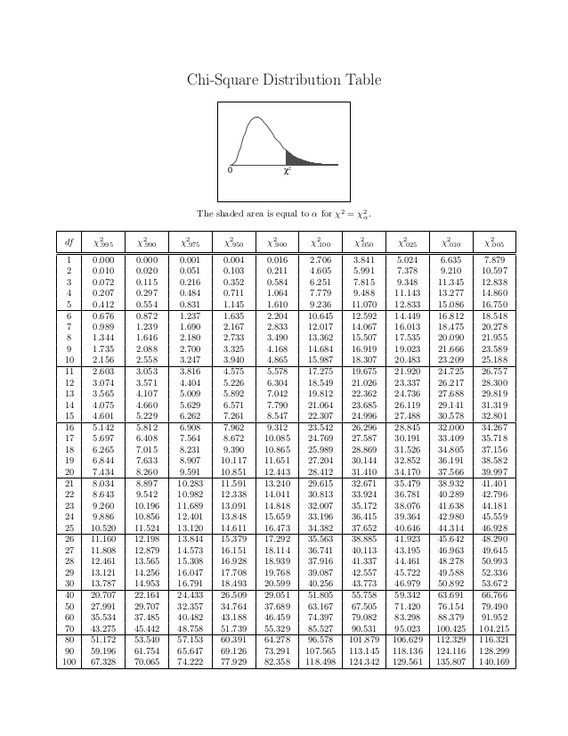

Chapter 3 Hypothesis Testing
- Hypothesis testing about population characteristics is another fundamental aspect od statistical inference.
Definition: Hypothesis
A hypothesis is a statement about a population parameter.
- In testing hypothesis, we start by making an assumption with regard to an unknown population characteristic.
- We then take a random sample from the population, and on the basis of the corresponding sample characteristic, we either accept or reject the hypothesis with a particular degree of confidence.
3.1 Null and alternative hypotheses
- Statistical hypotheses consist of the null hypothesis and the alternative hypothesis, which together contain all the possible outcomes of the experiment or study.
null hypothesis
- Generally, the null hypothesis states that a treatment has no effect (and has led to the term “null” hypothesis).
alternative hypothesis
- Usually, alternative hypothesis is the negation, or complement, of the null hypothesis.
Usually it is the hypothesis that the researcher is interested in proving.
The null hypothesis is denoted \(H_0\), and the alternative is denoted \(H_1\).
- Let \(\theta\) is a population parameter.
the general format of the null hypothesis and alternative hypothesis is \[H_0 : \theta \in \Theta_o \text{ and } H_1 :\theta \in \Theta_o^c\] where \(\Theta_o\) is some subset of the parameter space and \(\Theta_o^c\) is its complement.
3.2 Different types of Hypotheses
- simple hypotheses: both \(H_0\) and \(H_1\) consist of only one probability distibution
\[H_0: \theta = \theta_0 \text{ vs } H_1: \theta = \theta_1\]
- composite hypothesis: either \(H_0\) or \(H_1\) has more than one probability distribution
- one sided: \(H_0: \theta \geq \theta_0 \text{ vs } H_1: \theta < \theta_0\)
- one sided: \(H_0: \theta \leq \theta_0 \text{ vs } H_1: \theta > \theta_0\)
- two sided: \(H_0: \theta = \theta_0 \text{ vs } H_1: \theta \neq \theta_0\)
3.2.1 Writing \(H_0\) and \(H_1\)
The equality sign (eq: \(=,\leq, or \geq\))) always goes to \(H_0\)
\(H_0:\text{ }\) \(H_1: \text{ which is to be tested (claim to be tested})\)
- \(H_0: \text{ initially favoured one before collecting information }\) \(H_1:\)
Example 1
An ideal manufacturing process requires that all products are non-defective. This is very seldom. The goal is to keep the proportion of defective items as low as possible. Let \(p\) be the proportion of defective items, and 0.01 be the maximum acceptable proportion of defective items.

Example 2 let \(\theta\) be the average change in a patient’s blood pressure after taking a drug. An experimenter might be interested in testing
3.2.2 Two tailed test and one tailed test
Two tailed test
- Two tailed tests always use \(=\) and \(\neq\) in the statistical hypotheses.
- Alternative hypothesis allows for either the \(>\) or \(<\) possibility.
- Here the research is interested in testing deviations from the null in two directions.
One tailed test
- One tailed tests are always directional, and the alternative hypothesis uses either the \(>\) or \(<\) sign.
3.3 Rejection region
A hypothesis testing procedure or hypothesis test is a rule that specifies:
- for which sample values \(H_0\) is accepted as true
- for which sample values \(H_0\) is rejected and \(H_1\) is accepted as true
The subset of the sample space for which \(H_0\) will be rejected is denoted as \(R\) and called the rejection or critical region
The complement set \(R^c\) is called the acceptance region.
The rejection region \(R\) of a hypothesis test is usually defined through a test statistic \(W(X)\), a function of the sample.
For example
\[R = \{X:W(X)>b\}.\]
- If \(X\in R,\) one rejects \(H_0\)
- Otherwise if \(X\in R^c,\) there is no enough evidence to reject \(H_0\)

Figure 3.1: Rejection and nonrejection regions
3.4 Errors in testing hypotheses-type I and type II error
- Samples are used to determine whether to reject \(H_0\) or not.
- Since the decision to reject \(H_0\) or not, is based on incomplete (i.e sample information), there is always a possibility of making an incorrect decision.
We can make two types errors in testing a hypothesis.
- Type I error: if \(H_0\) is true, but the test incorrectly reject \(H_0.\) (reject \(H_0\)/ \(H_0\) true)
- Type II error: if \(H_0\) is false, but the test incorrectly accept \(H_0.\) (accept \(H_0\)/ \(H_1\) true)
| \(\text{}\) | Decision | |
|---|---|---|
| Truth | Accept \(H_0\) | Reject \(H_0\) |
| —— | ———————- | —————— |
| \(H_0\) | Correct decision | Type I error (\(\alpha\)) |
| \(H_1\) | Type II error (\(\beta\)) | Correct decision (power) |
Example 3
There is a concern about the perchlorate level found in well water. EPA guidelines suggest that a water supply should have a mean perchlorate level below 4 ppb (parts per billion)
Set up the appropriate hypotheses for this situation by considering the Type I error
3.5 Significance level
- We can control or determine the probability making type I error, \(\alpha\).
- However, by reducing \(\alpha,\) we will have to accept a greater probability of making a type II error, \(\beta\), unless the sample size is increased.
- The probability of committing a type I error is called \(\alpha\) or significance level (level of significance)
- \(\alpha\) equals the area under the curve that is in the rejection region beyond the critical value(s).
- The value of \(\alpha\) is always set before the experiment or study is undertaken.
- \(1-\alpha\) is called the level of confidence of the test.
- Common values of \(\alpha\) are 0.05, 0.01, 0.10 and 0.001.
3.6 Power of a test
- The probability of committing a Type II error is \(\beta\).
- Unlike \(\alpha\), \(\beta\) is not usually stated at the beginning of the hypothesis testing procedure.
Are \(\alpha\) and \(\beta\) related?
- \(\alpha\) can only be committed when the null hypothesis is rejected and \(beta\) can only be committed when the null hypothesis is not rejected.
- A researcher cannot commit both a Type I error and Type II error at the same time on the same hypothesis test.
Generally, \(\alpha\) and \(\beta\) are inversely related.
- One way to reduce both errors is to increase the sample size.
- If a larger sample is taken, it is more likely that the sample is representative of the population, which translates into a better chance that a researcher will make the correct choice.
Statistically, a larger sample will yeild a sample mean closer to the true population mean, thereby indicating better whether the null hypothesis is true or false.
- Power of a test is equal to \(1-\beta.\)
i.e., the probability of a test rejecting the null hypothesis when the null hypothesis is false.
3.7 Testing hypotheses
- Typically, the hypothesis testing process is presented in terms of an eight-step approach.
Task 1: Hypothesise
Step 1: Establish null and alternative hypotheses.
Task II: Test
Step 2: Determine the appropriate statistical test
Step 3: Set the value of \(\alpha,\) the Type I error rate.
Step 4: Establish the decision rule
Step 5: Gather sample data
Step 6: Analyse the data
Task III: Take statistical action
Step 7: Reach a statistical conclusion.
Task IV: Determine the business implications
Step 8: Make a business decision.
- This process of testing hypothesis is referred as the HTAB system, where HTAB is an abbreviation for Hypothesise, Test, Action, Business.
3.8 Methods of testing hypotheses
3.8.1 Using the critical value method to test hypotheses
A method of testing hypotheses by comparing the sample statistic with the critical value in order to reach a conclusion about rejecting or failing to reject the null hypothesis.
Critical region: Set of all values of the test statistic that would cause us to reject null hypothesis.
3.8.2 Using the p-value to test hypotheses
- Get the decision by comparing \(\alpha\) value with p-value.
- p-value: Probability of observing a sample statistic at least as extreme as the observed test statistic computed under the assumption that \(H_0\) is true.
The p-value defines the smallest value of \(\alpha\) for which the null hypothesis can be rejected
Example
If the p-value of a test is 0.038, the null hypothesis cannot be rejected at \(\alpha =0.01\) because 0.038 is the smallest value of alpha for which the null hypothesis can be rejected. However, the null hypothesis can be rejected for \(\alpha = 0.05.\)
If the p-value of a test is 0.0207, , the researcher would reject the null hypothesis for \(\alpha = 0.05\) or \(\alpha =0.10\) or any value more than 0.0207.
Virtually every statistical computer program yields this probability (p-value)
3.8.3 Using confidence intervals to test hypotheses
- Confidence intervals also give some indication about the decision.
Example 4
In order to ensure a good user experience, software companies often thoroughly test their products before releasing them to the public. IMAX Software company conducted a survey several years ago to determine the user-friendliness of one of their products. According to the previous survey the mean customer rating was 4.3 out of 5 (on a scale from 1 to 5, with 1 being low and 5 being high). Suppose a researcher believes that the customer ratings are lower now due to the new additional features of the software product, and he set a new survey in an attempt to prove his claim. Data are gathered and the results are obtained. Use this data to test this claim at 0.05 level of significance. Assume from previous studies that the population standard deviation is 0.574.
\(3,4,5,5,4,5,5,4,4,4,4,\) \(4,4,4,4,5,4,4,4,3,4,4,\) \(4,3,5,4,4,5,4,4,4,5\)
contd…
Hypotheses testing for single population
1.1 Testing hypotheses about a population mean using the z statistic (\(\sigma\) known)
1.2 Testing hypotheses about a population mean using the t statistic (\(\sigma\) unknown)
1.3 Testing hypotheses about a proportion
1.4 Testing hypotheses about a variance
Test hypotheses about two populations
2.1 Hypothesis testing for the difference in two means using the z statistic (Population variances known)
2.2 Hypothesis testing for the difference in two means using the t statistic (Population variances unknown)
2.3 Hypothesis testing for the difference in two proportions using the z statistic
| Test For | Null Hypothesis (\(H_0\)) | Test Statistic | Distribution | Use When |
|---|---|---|---|---|
| Population mean (\(\mu\)) | \(\mu = \mu_0\) | \(\frac{\bar{x} -\mu_{0}}{\sigma/\sqrt{n}}\) | \(Z\) | Normal distribution or \(n\geq 30\); \(\sigma\) known |
| Population mean (\(\mu\)) | \(\mu = \mu_0\) | \(\frac{\bar{x} -\mu_{0}}{s/\sqrt{n}}\) | \(t_{n-1}\) | Normal distribution and \(\sigma\) unknown |
| Population proportion (\(p\)) | \(p=p_0\) | \(\frac{\hat{p} -p_{0}}{\sqrt{\frac{p_{0}(1-p_0)}{n}}}\) | \(Z\) | \(n\geq20\), \(n\hat{p} \geq 5\) and \(n\hat{q}\geq 5\) |
| Population variance (\(\sigma\)) | \(\sigma=\sigma_0\) | \(\frac{(n-1)s^2}{\sigma_0^2}\) | \(\chi^2_{n-1}\) | Normal distribution |
| Difference of two means (\(\mu_1-\mu_2\)) | \(\mu_1-\mu_2=0\) | \(\frac{(\bar{x}_1-\bar{x}_2) -0}{\sqrt{\frac{\sigma^2_1}{n_1}+\frac{\sigma_2^2}{n_2}}}\) | \(Z\) | Both normal distributions, or \(n_1,n_2\geq 30;\) \(\sigma_1, \sigma_2\) known |
| Difference of two means (\(\mu_1-\mu_2\)) | \(\mu_1-\mu_2=0\) | \(\frac{(\bar{x}_1-\bar{x}_2) -0}{\sqrt{\frac{s^2_1(n_1-1)+ s^2_2(n_2-1)}{n_1+n_2-2}} \sqrt{\frac{1}{n_1}+\frac{1}{n_2}}}\) | \(t_{n_1+n_2-2}\) | \(\sigma_1, \sigma_2\) unknown but assume \(\sigma_1= \sigma_2\) , samples are independent, Both normal distributions |
| Difference of two proportions (\(p_1-p_2\)) | \(p_1-p_2=0\) | \(\frac{(\hat{p}_1-\hat{p}_2) -0}{\sqrt{\bar{p}\bar{q}\left(\frac{1}{n_1}+\frac{1}{n_2}\right)}}\) where \(\bar{p}=\frac{x_1 +x_2}{n_1+n_2}=\frac{n_1\hat{p}_1+n_2\hat{p}_2}{n_1+n_2}\) and \(\bar{q}=1-\bar{p}\) | \(Z\) | \(n\hat{p}, n(1-\hat{p}) \geq 5\) for each group |
Cumulative Standard Normal Distribution

Critical values from the t distribution

Critical values from the chi-square distribution

Tutorial
- A survey of technical consultants of a computer product s company found that the average net income for a technical consultant is \(\$74914\). Because this survey is now more than 10 years old, an accounting researcher wants to test this figure by taking a random sample of 112 technical consultants to determine whether the net income figure changed. Assume the population standard deviation of net incomes for technical consultants is \(\$14530\). Suppose the 112 technical consultants who respond produce a sample mean of \(\$78695\).
- Use the data given to test the following hypotheses.
\[H_0: \mu =25\qquad H_1:\mu\neq 25\]
\[\bar{x}=28.1\qquad n=57 \qquad \sigma =8.46 \qquad \alpha =0.01\]
- Use the data given to test the following hypotheses.
\[H_0: \mu =1200\qquad H_1:\mu> 1200\]
\[\bar{x}=1215\qquad n=113 \qquad \sigma =100 \qquad \alpha =0.10\]
- Use the \(p-\) value to reach a statistical conclusion.
- A company build fully automated harvesters. For a harvester to be properly balanced when operating , a 25-kg plate is installed on its side. The machine that produces these plates is set to yield plates that average 25-kg. The distribution of plates produced from the machine is normal. However, the supervisor is worried that the machine us out of adjustment and is producing plates that do not average 25 kg. To test this concern, he randomly selects 20 of the plates produced the day before and weighs them. The following data shows the computed sample mean and sample standard deviation \[\bar{x}=25.51\qquad n=20 \qquad s =2.1933 \qquad \alpha =0.05\]
- Suppose a study reports that the average price for a litre of self -serve regular unleaded petrol is \(\$1.16\). You believe that the figure is higher in your area of the country. You decide to test this claim for your area by randomly calling petrol stations. Your random survey of 25 stations produces the following prices.
\(\$1.27, 1.29, 1.16, 1.20, 1.37\) \(1.20, 1.23, 1.19, 1.20, 1.24\) \(1.16, 1.07, 1.27, 1.09, 1.35\) \(1.15, 1.23, 1.14, 1.05, 1.35\) \(1.21, 1.14, 1.14, 1.07,1.10\).
Assume petrol prices for a region are normally distributed. Do the data you obtained provide enough evidence to reject the claim?. Use a \(1\%\) level of significance.
- A manufacturing company believes exactly \(8\%\) of its products contain at least one minor flaw. Suppose a company researcher want to test this belief. He randomly selects a sample of 200 products, inspects each item for flaws and determines that 33 items have at least one minor flaw. Use a \(0.10\) level of significance to test this hypothesis.
- A survey of the online teaching shows that the primary mode of delivery for 17% of school teachers is google classroom. A researcher believes the figure is higher for western province. To test this idea, he contacts a random sample of 550 teachers asks which primary mode they used to online teaching during the least six months. Suppose 115 replied that google classroom was the primary mode of delivery. Using a level of significance of 0.05, tests idea that the figure is higher for western province.
- A manufacturing company has been working to implement a just-in-time inventory system for its production line. The final product requires the installation of a pneumatic tube at a particular station on the assembly line. With the just-in-time inventory system, th company’s goal is to minimize the number of pneumatic tubes that are piled up at the station waiting to be installed. Ideally, the tubes would arrive just as the operator needs them. However, because of the supplier and the variables involved in getting the tubes to the line, most of the time there will be some build-up of tube inventory. The company expects that, on average, about 20 pneumatic tubes will be at the station. However, the production superintendent does not want the variance of this inventory to be grater than 4. On a given day, the number of pneumatic tubes piled up at the workstation is determined eight different times and the following numbers of tubes are recorded.
\[23, 17, 20, 29, 21, 14, 19, 24\]
Use these sample data and \(\alpha =0.05\) to determine whether the variance is greater than 4.
Write the assumptions that you make and motivate your answer.
- A small business business has 37 employees. Because of the uncertain demand for its products, the company usually pays overtime on any given week. The company assumed that about 50 total hours of overtime per week us required and that the variance on this figure is about 25. Company officials want to know whether the variance of overtime hours has changed. Given here is a sample of 16 weeks of overtime data (in hours per week). Assume hours of overtime are normally distributed. Use these data to test the null hypothesis that the variance of overtime data is 25. Let \(\alpha =0.10\)
\(57,56,52,44\) \(46,53,44,44\) \(48,51,55,48\) \(63,53,51,50\)
- Suppose a researcher want to conduct a hypothesis test to determine whether the average annual wage of an advertising manager is different from the average annual wage of an auditing manager. A random sample of 32 advertising managers and a random sample of 34 auditing manager are taken.They are contacted by telephone and asked their annual salary. The resulting salary data are given below. Suppose \(\alpha =0.05.\)
| Advertising managers | Auditing managers |
|---|---|
| \(n_1 = 32\) | \(n_2 = 34\) |
| \(\bar{x}_1 = 70.700\) | \(\bar{x}_2 = 62.187\) |
| \(\sigma_1 = 16.253\) | \(\sigma_2 = 12.900\) |
- In a production company new employees are expected to attend a three-day seminar to learn about the company. At the end of the seminar , they are tested to measure their knowledge about the company. The traditional training method has been lecture and a QA session. Management decided to experiment with a different training procedure, which processes new employees in two days by using pre-recorded online lectures and having no QA session. If this procedure works, it could save the company thousands of dollars over a period of several years. However, there is some concern about the effectiveness of the two-day method, and company managers would like to know whether there is any difference in the effectiveness of two training methods.
To test the difference in the two methods, the managers randomly select one group of 15 newly hired employees to take the three-day seminar (method A) and a second group of 12 new employees for the two-day prerecorded online method (method B). The test scores are given below.
Use \(\alpha =0.05\), determine whether there is a significant difference in the mean scores of the two groups. Assume that the scores for this test are normally distributed and that the population variances are approximately equal.
Method A : \(56,50,52,44,52,47,47,53,45,48,42,51,42,43,44\)
Method B : \(59,54,55,65,52,57,64,53,53,56,53,57\)
- A study of young entrepreneurs was conducted to determine their definition of success. The entrepreneurs were offered optional choices such as happiness/self-fulfillment, sales/profit and achievement/challenge. The entrepreneurs were divided into groups according to the gross sales of their businesses. A significantly higher portions of entrepreneurs in the \(\$100000\) to \(\$500000\) category than in the less than \(\$100000\) category seemed to rate sales/profit a a definition of success.
Suppose you decide to test this result by taking a survey of your own and identify entrepreneurs by gross sales. You interview 100 young entrepreneurs with gross sales of less than \(\$100000\), and 24 of then define sales/profit as success. You then interview 95 young entrepreneurs with gross sales of \(\$100000\) to \(\$500000\), and 39 cite sales/profit as a definition of success. Use this information to test to determine whether there is a significant difference in the proportions of the two groups that define success as sales/profit. Use \(\alpha =0.01.\)